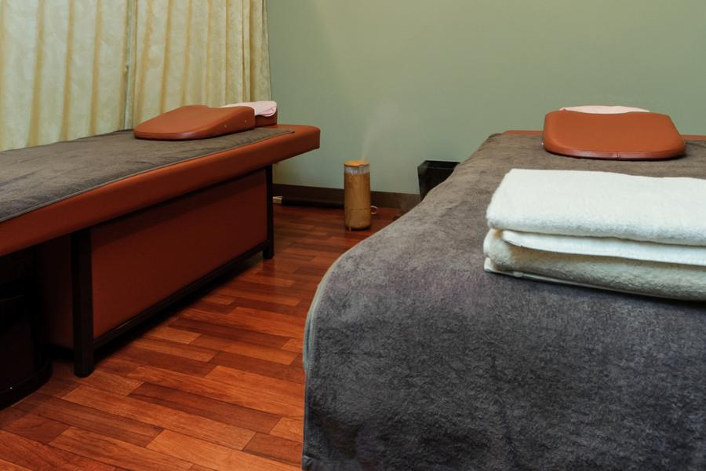
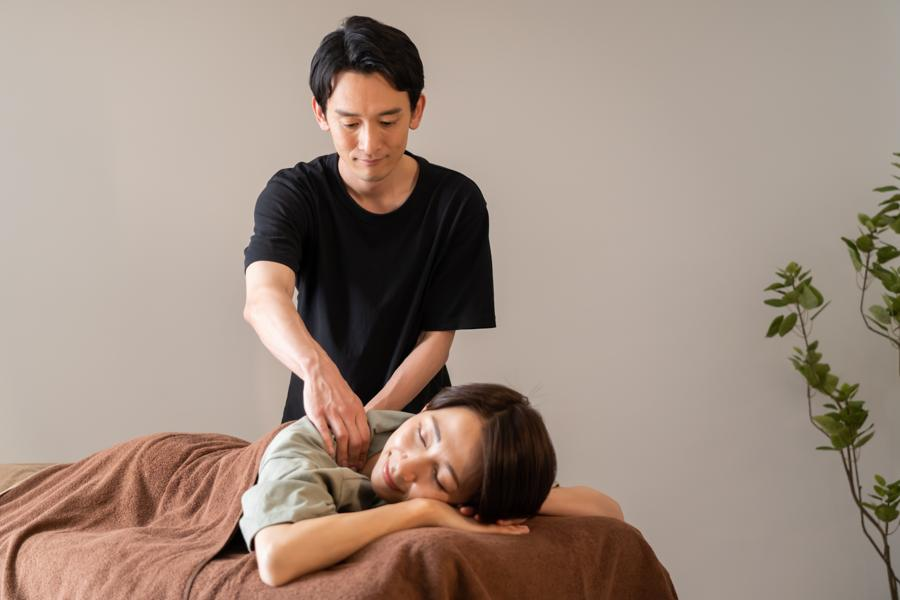

ホーム › 院について
院と施術者について

※ 写真はAdobe Stockのイメージです。
実際の制作ではお店の写真が入ります。
施術者から

のびる整体院の伸原 匠(架空)です。
この場所で12年、
座り仕事の方の腰と肩を見てきました。
一番よく聞くのは
「これくらいで来ていいのか
分からなかった」という言葉です。
ひどくなってから来られると、
戻すのに時間がかかります。
軽いうちに見せてもらえるほうが、
結果的に通う回数は少なくて済みます。
もうひとつ。
整体で扱える範囲には線があります。
受診したほうがいい状態のときは、
そう言います。
そこを曖昧にしないことが、
長く通っていただける理由だと
思っています。
写真はイメージ(Adobe Stock)。
実際の制作では施術者の写真が入ります。
ご予約
LINEで受け付けています。
24時間送れます。
返信は営業時間内に順にお返しします。
※ サンプルサイトのため、
ボタンは動作しません。
実際の制作ではLINE公式アカウントにつなぎます。
軽いうちのほうが、
通う回数は少なくて済みます。
アクセス
◯◯駅の東口から徒歩5分。
駐車場が2台あります。
※ 図は道順の説明用です。
実際の制作ではGoogleマップを埋め込みます。
駅からの道順
◯◯駅 東口を出る
改札を出て右手、
バスロータリー側の出口です。◯◯大通りをまっすぐ
信号を2つ越えます。
左手に郵便局が見えたら合っています。コンビニの角を左へ
角にコンビニがあります。
そこを左に曲がって2軒目です。1階の緑の看板が目印
建物の1階です。
階段はありません。
ベビーカーのまま入れます。
お車・自転車で来られる方
- 駐車場
- 建物の裏に2台(無料)。満車のときは近くのコインパーキングをご案内します
- 駐輪場
- 入口の横に置けます
- バス
- ◯◯バス「◯◯町」バス停から徒歩2分
- ベビーカー
- そのまま院内に入れます。段差はありません
※ サンプルサイトのため、
ボタンは動作しません。
実際の制作ではGoogleマップにつなぎます。
院の概要
- 院名
- のびる整体院(架空)
- 施術者
- 伸原 匠(架空)／この場所で12年
- 所在地
- 〒000-0000 ◯◯県◯◯市◯◯町1-2-3
- アクセス
- ◯◯駅 東口から徒歩5分／バス停「◯◯町」から徒歩2分／駐車場2台(無料)
- 営業時間
- 平日 10:00〜20:00(最終受付 19:20)／土 9:00〜17:00
- 定休日
- 日曜・祝日
- ご予約
- LINE または お電話。当日のご予約も受け付けています
- お支払い
- 現金・各種キャッシュレス決済
当院は医業類似行為を行う施術所ではなく、
自費のリラクゼーション・整体の店として運営しています。
診断・治療は行いません。
【実案件では、
あん摩マッサージ指圧師法・柔道整復師法の広告規制と、
施術者の資格の有無を必ず確認して書き直します】